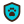

ONG Amigos de Patas
Sobre o Churros Aguardando a ONG
- Ontem
Pedido de adoção do Churros enviado.
Você: Olá! O Churros convive bem com gatos?
- Hoje
ONG Amigos de Patas: Oi, Juliana! Convive sim: ele divide o lar temporário com duas gatas. Quer conhecer o Churros no sábado?

A adoção é sempre gratuita ou com taxa voluntária. Desconfie de pedidos de pagamento e avise o suporte.